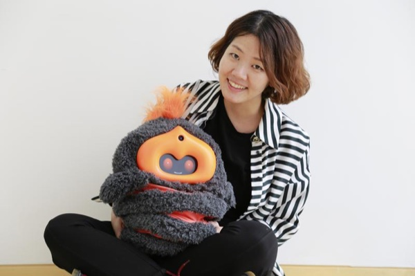

About the workshop
Conversation is one of the most intuitive ways people communicate, and dialogue has been central to human-robot interaction since the very beginning of HRI, from task-oriented exchanges to building social bonds. Large language models have transformed what dialogue systems can do, but they are not an end-all solution: they are hard to predict, costly to run, can produce repetitive or superficial conversations, and still struggle to integrate multimodal, embodied context in real time.
They also change how we study conversation. How do we design studies that remain controllable, comparable and reproducible with systems that can talk about almost anything? And how can we use these systems to study fluent, open-ended human-robot conversation autonomously, beyond Wizard-of-Oz setups?
Four years after the last HRI workshop dedicated to dialogue, this half-day workshop brings together the technical and social sides of the human-robot dialogue community. Participants will hear two keynotes, present their own recent and ongoing work in short oral presentations, and exchange perspectives on current burning questions in guided break-out discussions, building a shared understanding of what makes human-robot dialogue work and how we should shape its future.
Keynote speakers
-
Dr. Hendrik Buschmeier
Bielefeld University
A linguistic perspective on how human-robot dialogue phenomena can be studied and inform the design of dialogue systems.
-

Dr. Hae Won Park
MIT Media Lab
Recent technical advances in building and deploying dialogue systems for social human-robot interaction.
Tentative schedule
- 14:00–14:05Welcome and introduction to the workshop
- 14:05–14:45Keynote and Q&ADr. Hendrik Buschmeier, Bielefeld University
- 14:45–15:30Paper presentations
- 15:30–15:50Coffee break and networking
- 15:50–16:30Keynote and Q&ADr. Hae Won Park, MIT Media Lab
- 16:30–17:15Break-out discussions
- 17:15–17:45Plenary discussion of break-out results
- 17:45–18:00Concluding remarks
Break-out discussions
In smaller groups, each facilitated by one of the organizers, participants will discuss specific challenges in human-robot dialogue around guiding questions such as:
- How can dialogue systems incorporate linguistic and psychological factors in human-robot interaction?
- How should evaluation methodologies for human-robot dialogue systems be adapted to the capabilities of LLMs?
Participants and keynote speakers are invited to propose further questions. Each group will identify key challenges, brainstorm recommendations and propose avenues for future work, to be presented in the plenary discussion. Outcomes will be shared on this website and may form the basis of a joint position paper with interested participants.
Call for papers
We invite contributions on the technical and social sides of human-robot dialogue, from researchers experienced in developing and deploying dialogue systems for robots as well as those interested in incorporating dialogue into their own robotic systems. Papers may report recent results, describe ongoing work, or present position papers reflecting on the future of the field. Accepted papers will be presented as short oral talks.
Topics include, but are not limited to
- Design and architectures of human-robot dialogue systems
- Learning methods and algorithms for human-robot dialogue
- Integration of multimodal input and output in human-robot dialogue
- Adaptation and personalization in human-robot dialogue
- Interaction design for human-robot conversations
- Social dynamics and conversational behaviour in human-robot dialogue, e.g. feedback, turn-taking, trust
- Integration of LLMs into human-robot dialogue systems
- Applications and deployment of conversational robots
- Evaluation methodologies for human-robot dialogue
- Reproducibility and controllability of user studies with conversational robots
- Safety, robustness and reliability in human-robot dialogue
- Ethical considerations in human-robot dialogue, particularly regarding the use of LLMs
Submission types
- Extended abstracts — 2 pages
- Short papers — 4 pages
Both formats may include up to 2 additional pages for references. Submissions are made through OpenReview , where all papers are peer reviewed. With the authors' permission, accepted papers will be made available on this website.
Important dates
| Submission deadline | TBA |
| Notification of acceptance | TBA |
| Camera-ready deadline | TBA |
| Workshop | TBA |
Organizers
-

Ruben Janssens
KTH Royal Institute of Technology
rubeja@kth.se -

Merle M. Reimann
KTH Royal Institute of Technology
mmrei@kth.se -

Agnes Axelsson
IIIA-CSIC
agnes.axelsson@iiia.csic.es -

Kaitlynn Taylor Pineda
Johns Hopkins University
kpineda3@jhu.edu -

Charlotte Stinkeste
KTH Royal Institute of Technology
csti@kth.se -

Daniel Hernández García
Heriot-Watt University
D.Hernandez_Garcia@hw.ac.uk -

Marta Romeo
Heriot-Watt University
M.Romeo@hw.ac.uk -

Gabriel Skantze
KTH Royal Institute of Technology
skantze@kth.se